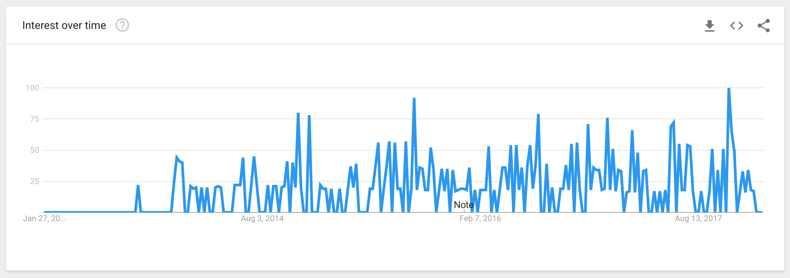
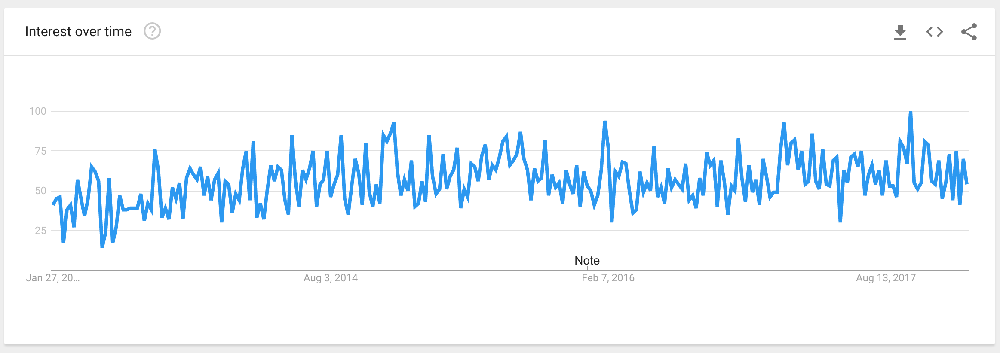
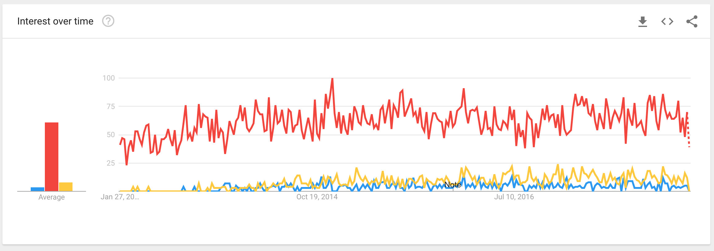
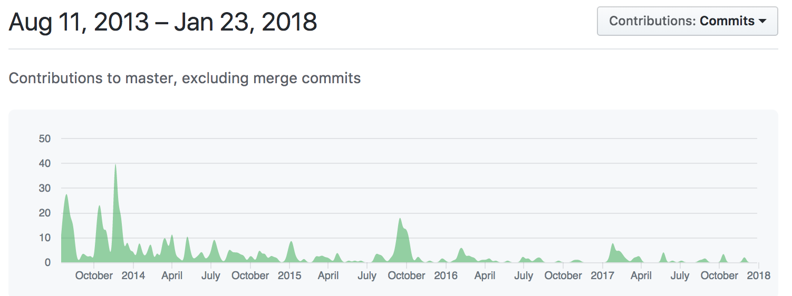
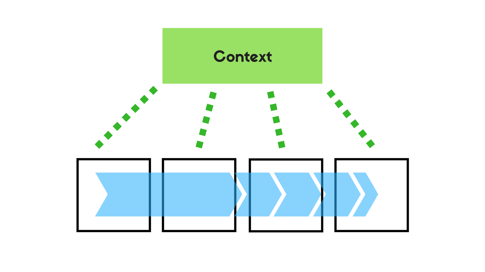
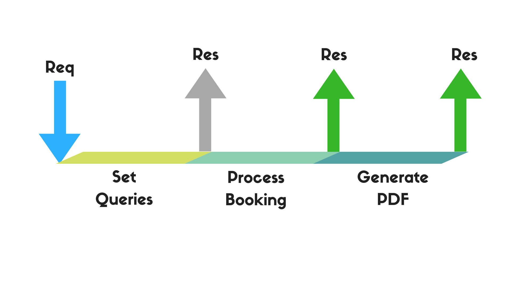
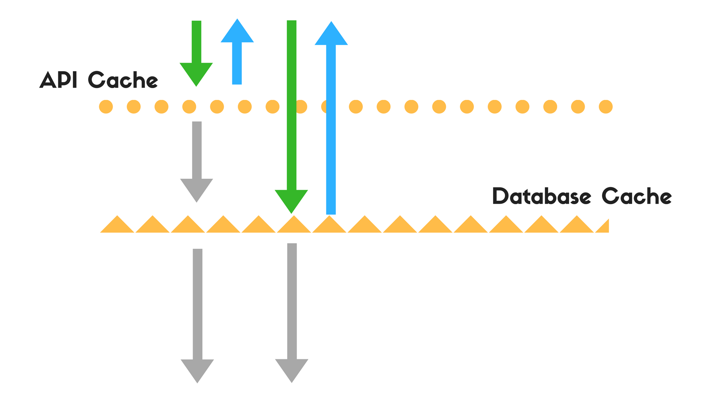

Building Performant API's with Koa.js
Tryshchenko Oleksandr @ DataArt
tryshchenko.com || otry.eu
Agenda
- WTF is Koa
- Performant API's with Koa?
"Hey, guys, let's try koa?"

Koa
Express
Overall
Overall
Contributions
What is Koa
| Middleware Core | Routing | Template Engine | HTTP Utilities | |
| Koa | + | - | - | - |
| Express | + | + | + | + |
| Connect | + | - | - | - |
So, why Koa? 💡
Event Loop
console.log(1);
setTimeout(() => console.log(2), 0);
console.log(3);
// 1
// 3
// 2
Async
const chownCallback = () => ...;
fs.chown(path, uid, gid, chownCallback);
Sync
fs.chownSync(path, uid, gid);
/** some logic after chown */
Async
- Callbacks
- Promises
- Generators
- Async / Await
- Observables
Async
- Callbacks
- Promises
- Generators (koa.js 1)
- Async / Await (koa.js 2)
- Observables
Async / Await
Async / Await
fetch('https://someapi.somedomain/something')
.then(response => response.json())
.then(json => console.log(json));
Async / Await
const res = await fetch('https://someapi.somedomain/something');
const json = await res.json();
console.log(json);
Middlewares
- Context
- Callback
Middlewares
Middleware Architecture
- Shared Context
- Encapsulated request/response
- Synchronous Execution (Cascading)
Scaffold
const Koa = require('koa');
const app = new Koa();
app.use(async ctx => {
ctx.body = 'Hello Hannover!';
});
app.listen(3000);
Middleware
const Koa = require('koa');
const app = new Koa();
app.use(async (ctx, next) => {
const res = await nextElections();
ctx.body = res;
...
await next();
});
app.listen(3000);
Writing a middleware
(ctx, next) => {}
What to take care about
- Concurrency
- Database
- HTTP
Libs Quality

Express?
- Incompatible API's
- Existing libraries "adapters"
- Simple process of porting
Performance isn't about tools...
Performance: Databases
- Use cache for database layer
- Optimize your DB requests
- Take care about DB itself
Performance: HTTP
- Cache answers for frequent requests
- Do complicated operations separately
- API optimizations
Peformance: Queues
Queue
Queues
- Work with API's
- I/O Operations
- Complex DB requests
- Sending emails
- ...
Performance: Caching
Caching
@TODO write something about how freaking terrible situation is in koa ecosystem
Error Handling
What do I use

Security
Handpicked
- CSRF koa/csrf
- Password Encryption bcrypt
- Escaping escape-html
- Input valiation validator.js
- Headers helmet
- Audit nsp
Send me a Pigeon
- facebook / tryshchenko
- github / tryshchenko
- twitter / tryshchenko
- tryshchenko.com
- otry.eu